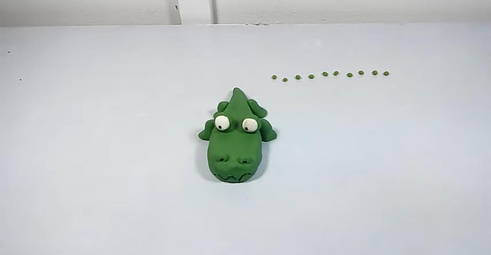
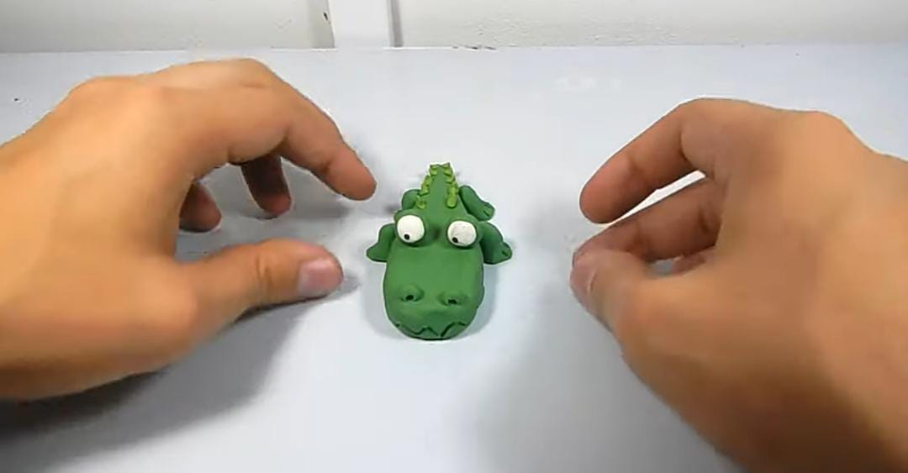

Vamos a empezar
Paso 1 Hacer una bolita grande de color verde, 6 medianas, 2 un poco chicas,10 un poco mas
chica que las anteriores(todas color verde) dos bolitas blancas de tamañano un poco chico
y dos bolitas color negro chicas(para los ojos).

Paso 2 Con la bolita grande de color verde empezamos a hacer un rectangulo con ella,con alguno
de los lados haremos la cola del cocodrilo, lo aplastaremos hasta conseguir una punta.

Paso 3 con alguna palita o algun objeto que tenga en casa,haremos en zig-zag, lo haremos
en la cabeza , ya que esto seria los dientes

Paso 4 Tomar dos bolitas verdes de las 6 medianas que que habian,colocarlas en la parte
de arriba de la cabeza,tomar las dos bolitas blancas y ponerlas en medio de las verdes los
seran los ojos, para la pupila se tomaran las dos bolitas y la pondremos en la esquina inferior
de cada un de ellos

Paso 5 tomaremos las dos bolitas verdes y las colocaremos como nariz de cocodrilo

Paso 6 con las cuatro bolitasmedianas sobran haremos las patas de cocodrilo,haremos
pequeños cilindros que aplastaremos de un lado, que sera la parte de abaj,asi con los
otros tres

Paso 7 con las 10 bolitas chiquitas color verde haremos las escamas del cocodrilo,las
haremos como cilindros, que los piquitos queden hacia arriba y los emepzaremos aponer en la
cola.
